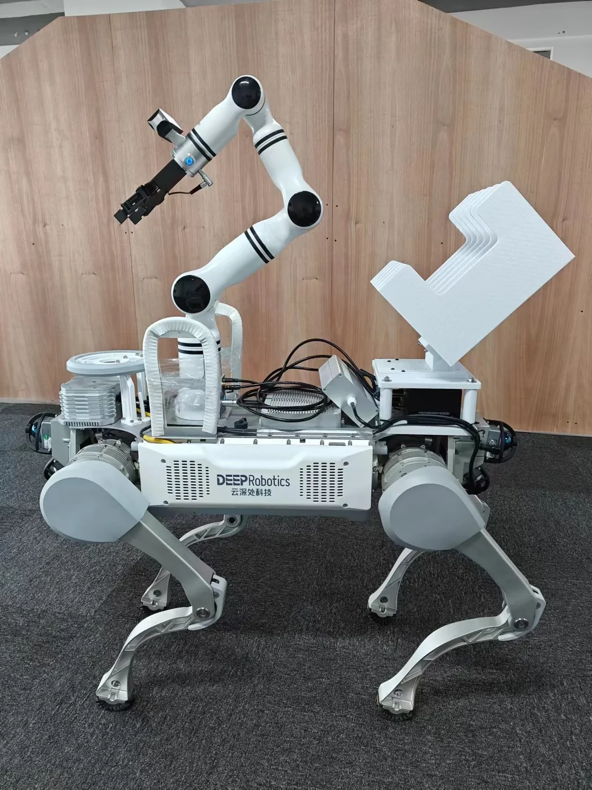
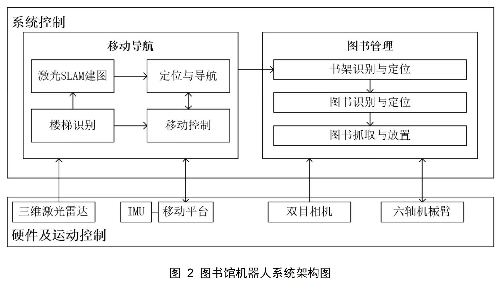

移动操作Mobile manipulation · 2023–2024
四足机器人跨楼层图书整理Quadruped robot for cross-floor library tasks
把四足跨楼层移动、环境感知与机械臂取放连接起来，探索多层图书馆中的图书整理。Connects quadruped cross-floor mobility, perception, and arm manipulation for library book handling.
场景与目标Setting & goal
多层图书馆的图书整理涉及楼层间移动、书架定位以及书本取放。项目以可上下楼梯的四足平台搭载机械臂与 RGB-D 相机，探索这一连续任务。Book handling across library floors requires stair traversal, shelf localization, and pick-and-place manipulation. The project uses a stair-capable quadruped equipped with an arm and RGB-D sensing to explore this workflow.
系统架构System architecture
Livox 三维激光雷达、IMU 和 RealSense 相机服务于定位建图及书架感知。PPT 架构列出 ROS 2、Nav2、MoveIt 2、抓取点生成和取放控制，将移动与机械臂操作串联。Livox 3D LiDAR, IMU, and a RealSense camera support localization, mapping, and shelf perception. The slide architecture includes ROS 2, Nav2, MoveIt 2, grasp-point generation, and pick-and-place control to connect mobility and manipulation.
原型验证Prototype validation
视频分别展示四足平台上下楼梯、移动，以及机械臂在书架附近操作。PPT 同时列出遮挡、算力和复杂书籍摆放等仍待解决的问题。The videos show stair traversal, movement, and arm operation near shelves. The slides also identify occlusion, compute limits, and complex book arrangements as unresolved challenges.

